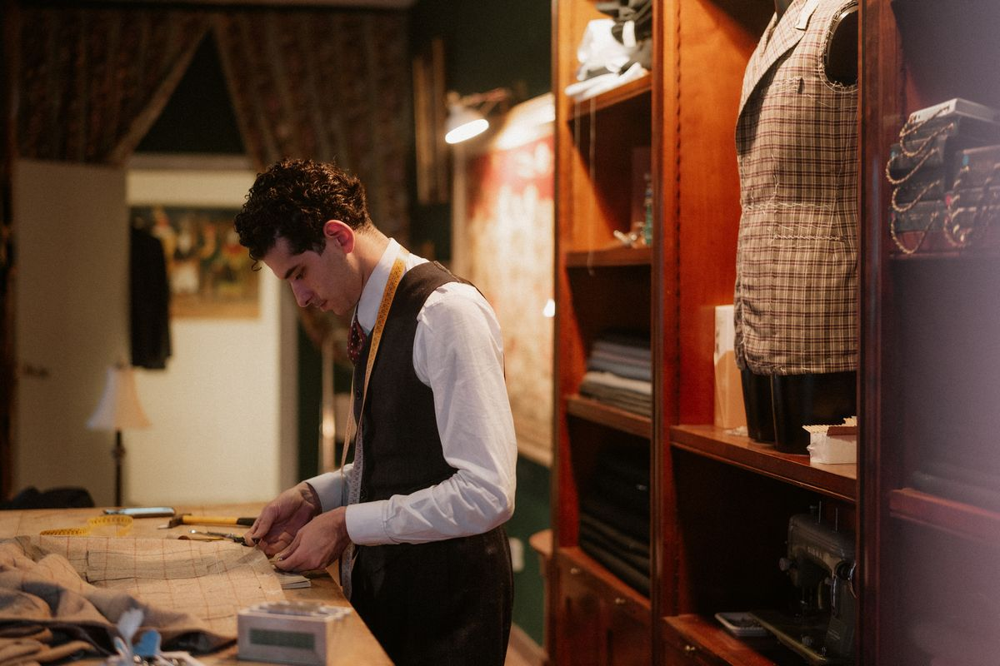
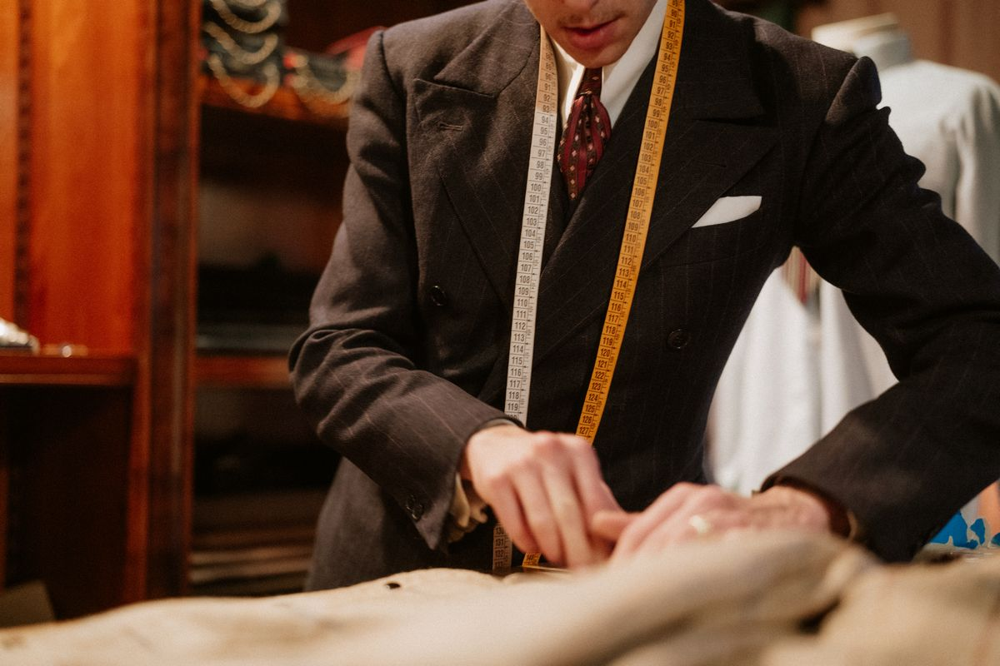
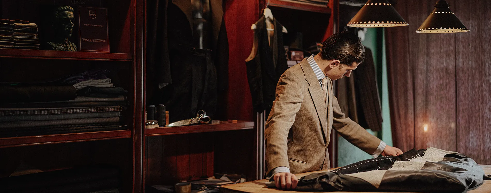
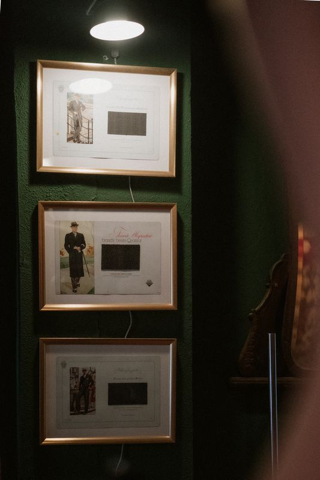
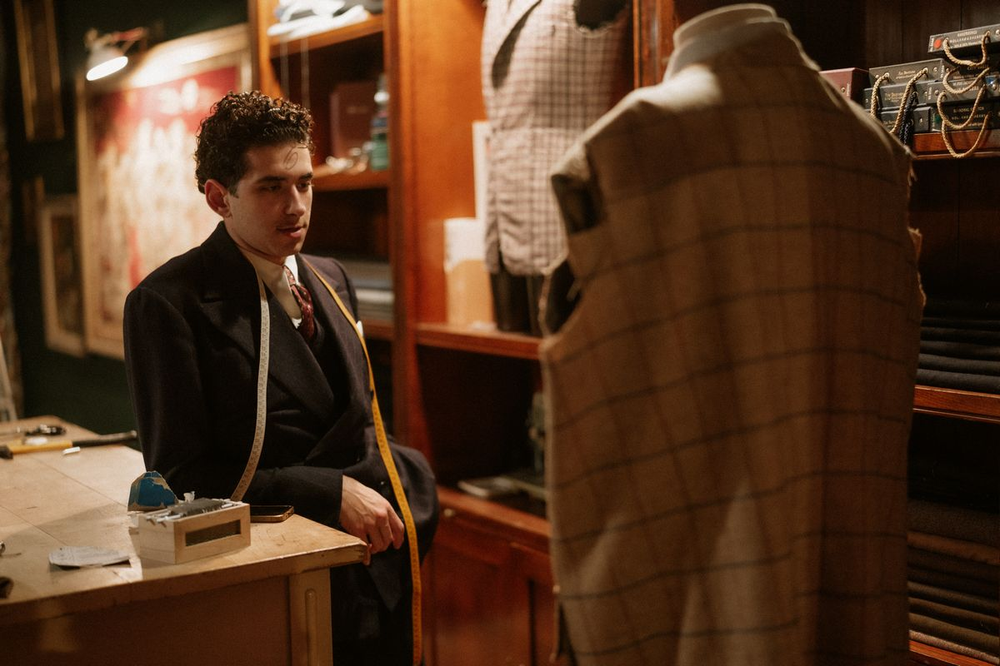

El taller
Cuidamos cada detalle, a mano





Sastrería en Madrid · Cita previa
Trajes artesanales hechos a medida y diseño de vestuario histórico para cine, televisión y música. Elegancia, distinción y un servicio cercano en nuestro taller.

Nuestra sastrería en Madrid
Si lo que buscas es elegancia, distinción y un servicio cercano, en nuestro taller nos comprometemos a hacer realidad tus deseos.
Ya sea para un evento especial, una producción artística o un traje a medida que refleje tu estilo personal, estamos aquí para ofrecerte una atención exclusiva y personalizada, siempre con cita previa.
Ven y descubre cómo transformamos tus ideas en prendas que reflejan tu esencia, con un servicio impecable que cuida cada detalle.
Sastrería
Artesanal / Bespoke
Patrón único creado desde cero para ti, con varias visitas al taller y ojales a mano. Total libertad de elección en tejido, solapas, bolsillos y botonadura. No hay duda de que el «Bespoke» es el rey de los trajes.
Descubrir el proceso Bespoke →Semi-Artesanal / MTM
Parte de un patrón base que se adapta a tus medidas, con menos visitas al taller y un plazo de producción más reducido. Un traje a medida, ajustado a tu figura, por un precio más asequible.
Descubrir Made to Measure →El taller



Vestuario histórico
Diseño de vestuario para televisión, cine, videoclips y conciertos. Un amplio stock de prendas de diversas épocas, desde 1800 hasta 1970, entre piezas originales y confección fiel a cada periodo histórico.
Ver el vestuarioCita previa
Atención exclusiva y personalizada en nuestro taller de Madrid, siempre con cita previa.
Solicitar cita